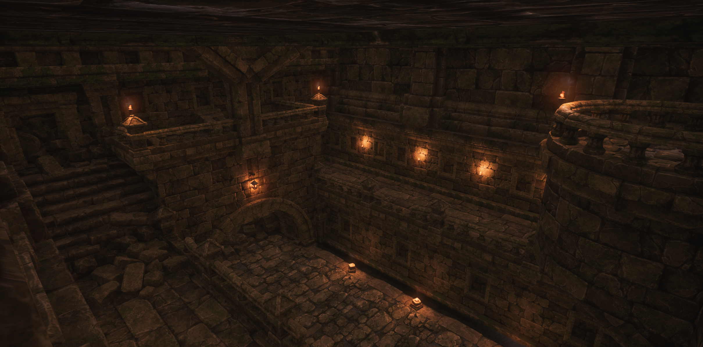

Morak

Responsibilities
- Responsible for creating the level, from initial design to final iteration, to be experienced by over a quarter million players.
- Responsible for optimizing the level.
- Coordinated closely with the art team for lighting.
While with the team at Galactic Contention, I was given the opportunity and the responsibility to create a remake of one of our older and more dated levels, Morak. This level had to fit in the broader scope of Galactic Contention, which is a total conversion mod for an FPS game called Squad. In it, 2 teams of 50 players each fight in a variety of game modes for control of a planet. As a level designer, I had to ensure that each of these game modes were offered support, whether or not they were planned to be feaured at map launch.
It was also critical that the game's logistics system was kept in mind when developing this level. While all mechanics are important, the logistics system governs how players spawn and fortify locations across large levels.
To start on the map, I first started with what I knew from the specs I was given:
- The level should be located on the planet Morak.
- Level dimensions should match the given 4x4 kilometer terrain generated by another developer.
- Combined arms (infantry, armor, and air) must be supported.
- There would be minimal to no new asset creation, as the art department already had plenty of work to do related to other high-priority tasks.
Aside from these specs, I was given fairly free reign when it came to the design of the level.
Working off this, the best first step I could take was to create an ititial POI blockout. While the flow within each POI would vary, having a broad overview for a level so large was critical, especially as how far into an objective chain a POI is should impact it's difficulty in taking or defending. Unfortunately, this was one of my earlier maps for Galactic Contention, and I did not save any images of my process. Additionally, most of my drawings and sketches were done directly on the landscape, and thus destroyed as development progressed. I have, however, redrawn a simplified version over the minimap to better explain the process.

Working off of this initial concept of a first invasion layer (defenders own all points, and must defend them linearly), I began to skulpt the terrain, apply a quick foliage paint, and place larger buildings. For buildings which were not being constructed from modular components, I did not use traditional blockouts, as the size of each was determined by the assets used. Instead, larger buildings functioned as blockouts for the area, with smaller aspects being added later. These smaller aspects could include cover such as a stone, a barrier, or a crate. Later on, I would add the North-East component of the map, additional POIs, and additional gameplay layers (for both additional game modes and different objective chains).
This was an earlier iteration of one of the final defend objectives. However, during playtesting, it was found that a number of the lanes were not clear enough for the players. To remedy this, additional roads and river beds were added. The roads also helped attackers to more easily get vehicles onto the objective when attacking, as previously, they had primarily followed the road leading up the hill. This attack route was less than ideal, as the vehicles must have their back to the defender's supply lanes when pushing up the road.

 However, for the final defend objectives, the defenders were tasked with holding two objectives simultaneously (or they can leave one undefended and just hold one,
though this would give the attackers extra tickets to spawn with). Located down the hill from the radar station, it allowed for the gap between the hills to be closely watched by the defenders, preventing vehicles from easily flanking (though other, less effective
routes are still available). While the point is somewhat less fortified when compared with radar hill, the two objectives are close enough to easily reinforce eachother if one begins to fall, but far enough to have two separate bases constructed by the defenders.
This creates an interesting and unique final push for the level, even though the final objectives are each less fortified than the singular final point found on other levels.
However, for the final defend objectives, the defenders were tasked with holding two objectives simultaneously (or they can leave one undefended and just hold one,
though this would give the attackers extra tickets to spawn with). Located down the hill from the radar station, it allowed for the gap between the hills to be closely watched by the defenders, preventing vehicles from easily flanking (though other, less effective
routes are still available). While the point is somewhat less fortified when compared with radar hill, the two objectives are close enough to easily reinforce eachother if one begins to fall, but far enough to have two separate bases constructed by the defenders.
This creates an interesting and unique final push for the level, even though the final objectives are each less fortified than the singular final point found on other levels.

On the other hand, the first objective is much easier to take. Little more than an ambush point for vehicles traveling on the road, it is exceptionally weak to infantry pushes from the top of the hill - which is also the direction the attacker's main base is. There is, however, still plenty of soft and hard cover, so defenders can put up a fight. They can either aim to burn the enemy's tickets early on, or succesfuly defend the objective if the enemy is sufficiently uncoordinated.

The second objective is a bit harder, though still managable. Located inside of the forest, it is well-protected from vehicles, except for the main road leading up to the landing pad and facility. Unlike the first objective, this objective also provides some overhead cover, to better protect against air attacks. However, the objective is still weak to infantry pushes from the top of the cliff, meaning the defenders will want to form a perimiter rather than just holding on the point. This helps to bring some additional hectic forest fights into the mix.
 This alternate second objective was added later into development, in order to give more variety to different layers. The defense strategy here is more or less the opposite of the
original second objective, in that it's supply lines are easily cut and it becomes a last stand (though bringing in some supplies and ammo by air is still possible). However, the abandonded jedi temple commands an excellent view of the surrounding hill and road,
allowing for the defences to hold even under siege, if properly prepared in advance. However, as it is just the second (and sometimes third) objective, the interior is not built as secure. While it can repel some attackers quite well, it will quickly become overrun
if the outer defences fall. Particularly, the balcony overlook has a clear view to almost the entirety of the interior, and it is only reachable from the outside or via jetpack.
This alternate second objective was added later into development, in order to give more variety to different layers. The defense strategy here is more or less the opposite of the
original second objective, in that it's supply lines are easily cut and it becomes a last stand (though bringing in some supplies and ammo by air is still possible). However, the abandonded jedi temple commands an excellent view of the surrounding hill and road,
allowing for the defences to hold even under siege, if properly prepared in advance. However, as it is just the second (and sometimes third) objective, the interior is not built as secure. While it can repel some attackers quite well, it will quickly become overrun
if the outer defences fall. Particularly, the balcony overlook has a clear view to almost the entirety of the interior, and it is only reachable from the outside or via jetpack.
As an additional note, the canyon passage was added later into development (with the abandonded temple) in order to give an additional vehicle route. It was made fairly long, as using it can get someone around the defensive and offensive lines fairly well,
but it is still short enough to have a sufficient payoff.

 The level's main facility is an interesting objective. While it has an imposing presence, it is not nearly as secure as it appears. While protected from orbital and air attacks,
and reasonably safe from vehicles, the interior is quite limited. Additionally, the defenders' spawn structures can easily be disabled from the attackers presence outside (a game mechanic). That said, the 3 main hallways can be used as chokepoints for machine guns, allowing for a
push and pull as the defenders try to create a safe area around their spawn structures. If the defenders succeed, they can continue to bring in reinforcements (respawning when dead), while the attackers try to break in before they lose control of the area. However, the attackers usually only need to break 1 hallway before the defence
collapses, making it a very achievable goal for a coordinated attack. During this period of conflict, armor will likely be attempting to counter the other team's armor, and secure the surrounding area for the infantry.
The level's main facility is an interesting objective. While it has an imposing presence, it is not nearly as secure as it appears. While protected from orbital and air attacks,
and reasonably safe from vehicles, the interior is quite limited. Additionally, the defenders' spawn structures can easily be disabled from the attackers presence outside (a game mechanic). That said, the 3 main hallways can be used as chokepoints for machine guns, allowing for a
push and pull as the defenders try to create a safe area around their spawn structures. If the defenders succeed, they can continue to bring in reinforcements (respawning when dead), while the attackers try to break in before they lose control of the area. However, the attackers usually only need to break 1 hallway before the defence
collapses, making it a very achievable goal for a coordinated attack. During this period of conflict, armor will likely be attempting to counter the other team's armor, and secure the surrounding area for the infantry.

As the second to last objective, the raider camp is noticeably stonger. With a cliff protecting its backside, and having overwatch on its surroundings, it can be a very defensible location. The nearby ruins make an excellent backup fortification, and it is also fairly close to radar hill. Additionally, while not imune to orbital or air attacks, it is significantly resistant to them, thanks to its limited overhead cover.

An alternate objective to the raider camp, the swamp is protected from long-range fire by its lower elevation and thicker foliage. The ruins also provide excellent hard cover, and the objective itself controls one of the level's main roads - which are critical to vehicles attempting to travel with any speed.

Lastly, while not an objective, there are many roadside locations such as these ruins throughout the map. While they vary, from ruins to bunkers or buildings, they all provide two key things: a spot for a base to be set up, and cover to ambush vehicles from. This forces vehicles to travel with caution, creating an infantry-oriented experience for players. This helps to bring some added variety to the levels that are a part of our passion project.